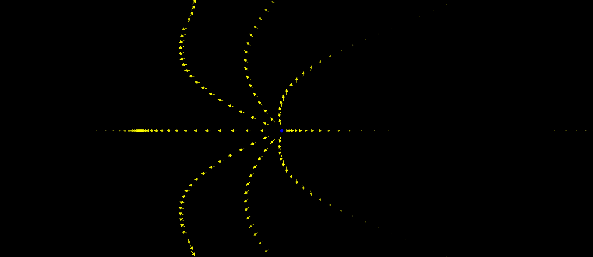
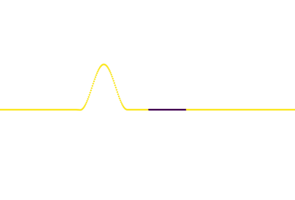

Computer Science & Mathematics
I am currently a Researcher in Computer Science at Adelaide University, working in Game Theory and Computer Networking (Emulating MANETs).
I was a Mathematics postdoc at UNSW and the University of Sydney, specializing in Ergodic Theory, Number Theory and Topological Dynamics. See the Research tab for my list of publications.
github.com/kb-math/electrodynamics
Plots various electric fields generated by given moving charges. Below is an example of the electric field emitted by a single positively charged particle (blue dot) moving sinusoidally.

github.com/kb-math/wave_simulation
Plots waves travelling through space where the wave speed differs at each point. The example below shows an incoming light wave starting in a fast region (yellow, e.g. air), entering a slower region (blue, e.g. glass), then re-entering the original medium. Reflection and refraction are clearly visible.

This is simulated by solving a wave equation in which the wave speed is a function of space (rather than a constant). Analytic solutions are generally unavailable, so the finite-difference method is used.
Chalmers University (Gothenburg, Sweden) · September–October 2015
(2023) Number Theory Down Under 11, ANU (Canberra)
(2023) Trends in Metric Number Theory, La Trobe University Bendigo (Invited speaker)
(2022) Dynamics in NZ, Karioitahi Beach (New Zealand)
(2022) Number Theory Down Under 10, University of Queensland
(2021) AustMS — Dynamical Systems and Ergodic Theory session
(2021) Number Theory Down Under 9, University of Sydney (Invited speaker)
(2016) Ergodic Theory and its Applications, University of Sydney
(2016) CANT 2016, CUNY Graduate Center (New York)
(2015) Wrocław University of Technology (Poland)
(2015) Workshop on Algebraic, Number Theoretic and Graph Theoretic Aspects of Dynamical Systems, UNSW
(2014) Australian Mathematical Society meeting (honourable mention, student talk prize)
(2014) Sydney Dynamics Group seminar